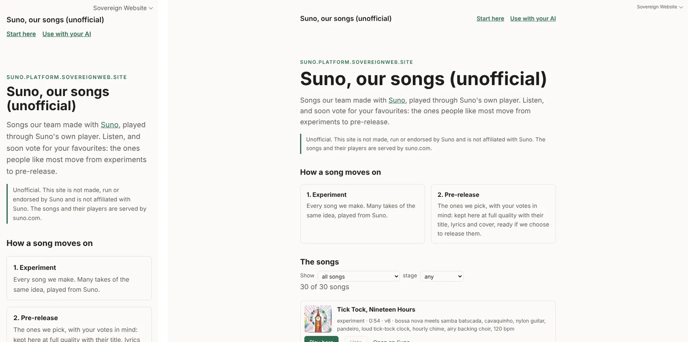

Synthetic users: Suno, our songs, round 1 (baseline)
Site: https://suno.platform.sovereignweb.site/ at 024dcea (v0.1.1): 30 song takes as cards, with Play (Suno's own player, loaded on press), Vote (not open yet) and filters. Run: 23 November 2026, about 22:30 UTC, by design.b.rounds, asked by design.b at suno.b's request. Would you press Play? 5 of 5. Would you come back to vote? 1 of 5. Look 2.8 (3, 3, 2, 3, 3). Nobody said "wow". The review.
Method: Synthetic users. One agent played five personas from captures of the phone (light and dark) and the desktop, before anything was played. These are simulations, and never replace the measured checks or a real person. v0.1.2 went live during the run; see the review.
| Persona | Play? | Come back to vote? | Look | In their words |
|---|---|---|---|---|
| Music fan, sent the link, on a phone | yes | no | 3 | "There are loads of songs with the same name and I can't tell which is which. And 'soon' isn't a date." |
| Friend of the team, wants to help pick | yes | yes | 3 | "I want to help, but tell me when voting opens." |
| Low-vision reader on a phone | yes | no | 2 | "The Vote button is so faint I took it for broken, and the reason is far away at the bottom." |
| Design critic | yes | no | 3 | "Thirty undifferentiated rows give me nothing to judge between." |
| Sceptical visitor | yes | no | 3 | "I don't know who 'our team' is." |
Agreed by three or more
- Good: calm, clearly marked unofficial ("not affiliated with Suno"), and the green "Play here" is obvious.
- Bad:
- the repeated titles make the takes impossible to tell apart: "Strangers in the Loop" 14 times and "Tick Tock, Nineteen Hours" 7 times, so a vote would mean nothing (all five);
- Vote is unexplained where it sits, with no date (four);
- the long style-tag lines are hard to read (three).
